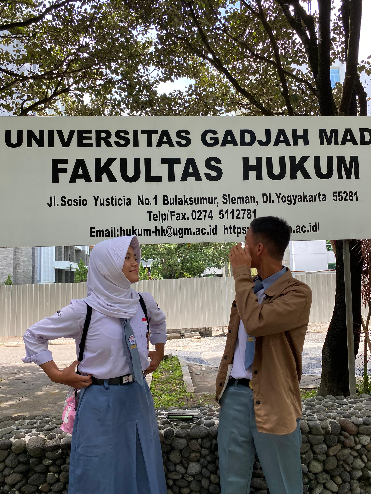
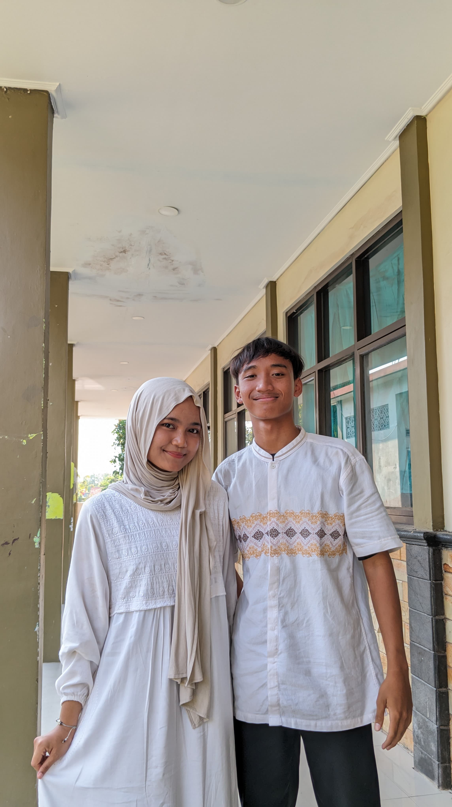
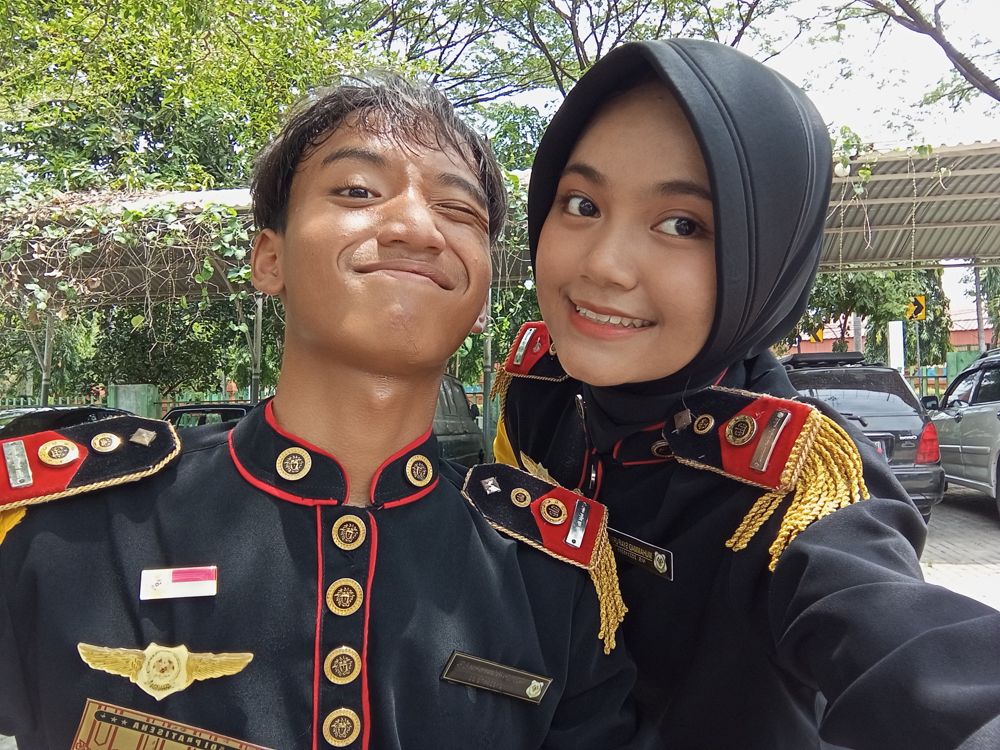

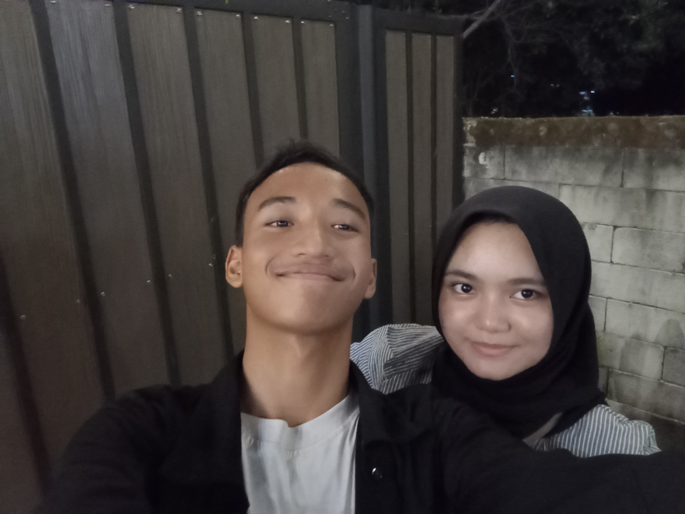
Hallo!!! ini adalah kisah kita
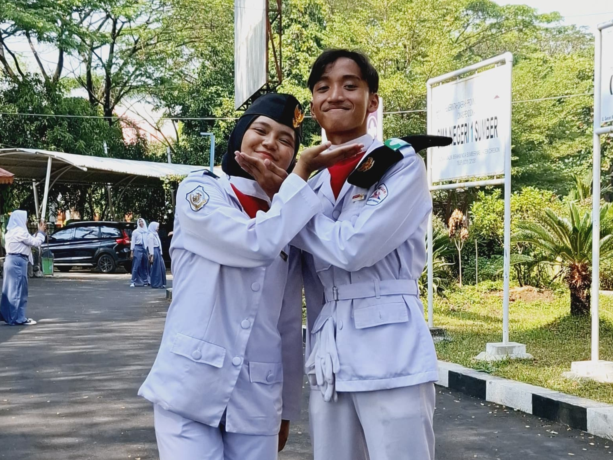Kita dekat dari sini. Awalnya ya aku juga gatau, tapi aku selalu melirik ke kamu hehehehe
Aku ngeliat kamu tu kaya adem. Aku juga selalu merasa kalau kamu itu beda dari yang lain. Di mataku kamu itu spesial. Cantik, Anggun, dan Indah 3 kata itu yang mendeskripsikan kamu. Selalu dan selamanya mungkin aku akan selalu berpikir kalau kamu itu BIDADARI yang ditakdirkan untukku
Inget ga? ini awal kita date!!!! yaapp. Menurutku itu momen awal kita jadi lebih dekat. Kamu dah berani nyubit aku,mukul aku. AHAHAHA lucu banget kamu makin imut kalo kaya gitu. Terus pas di motor jalan pulang kita JADIAN!!!!
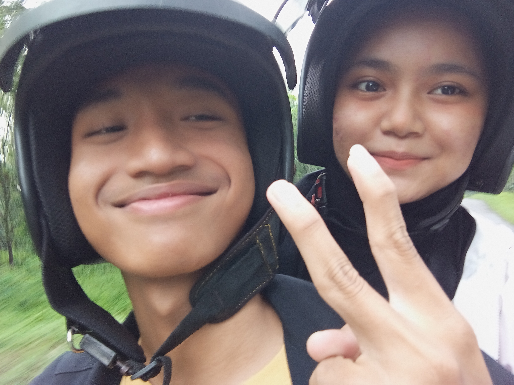Sejak saat itu kita sering jalan jalan berdua. Yahh....walaupun gaada tujuan dan ke jalan yang itu itu aja. Tapi, sangat sangat berkesan bukan seng?? Ke kunigan,majalengka,ke gramedia,banyak dehhh
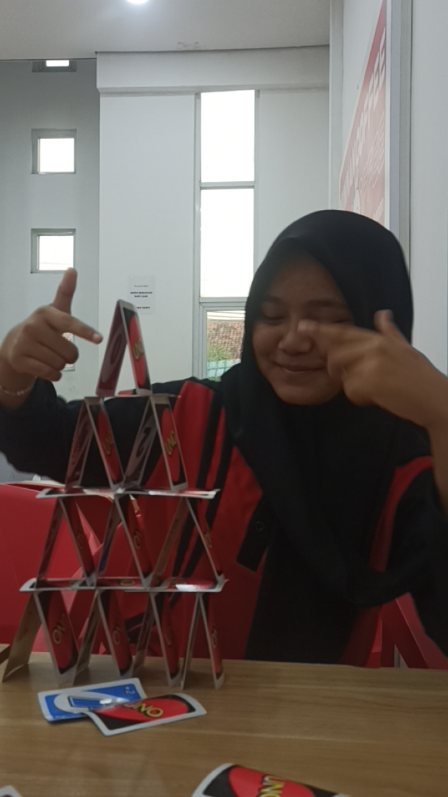Nahh, kalau ini momen kita sebelum jadiann!!! Waktu itu setelah eskul kita main uno dulu sama astri pito abis itu pulangnya aku ngajak kamu ke miksuee, ihh kamu imut banget di foto ini
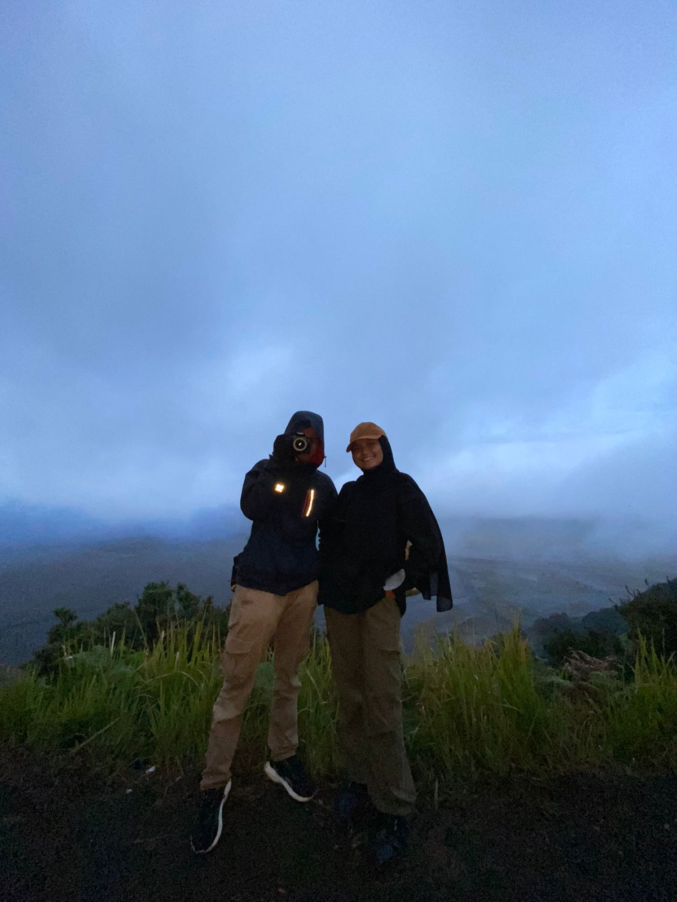AHHHH ayo ke bromo lagi!!! Mungkin di titik ini yaa?!! kita mulai kerasa saling ada rasa.
Dan masih banyak momen lainnya
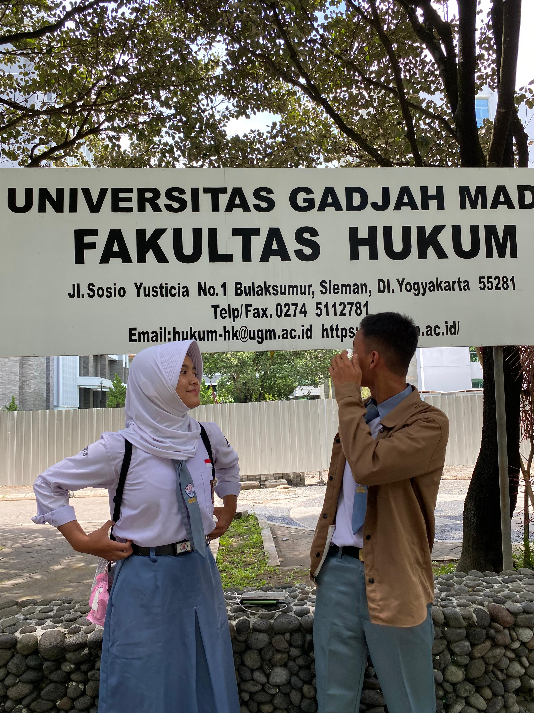
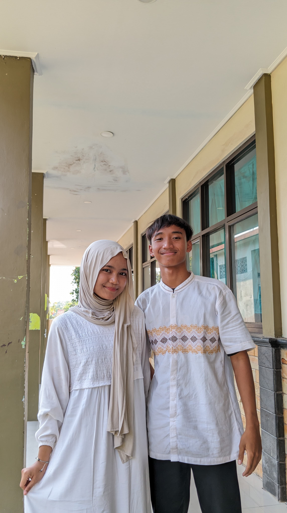
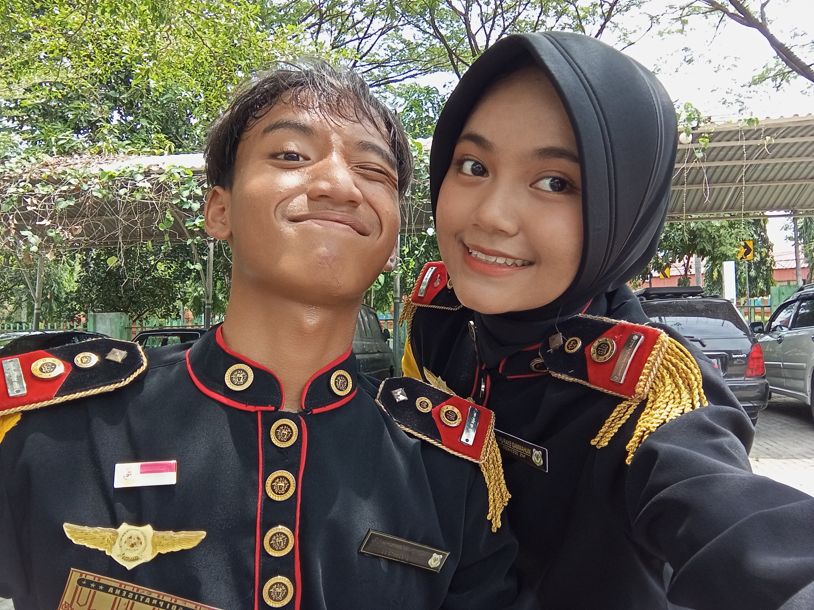
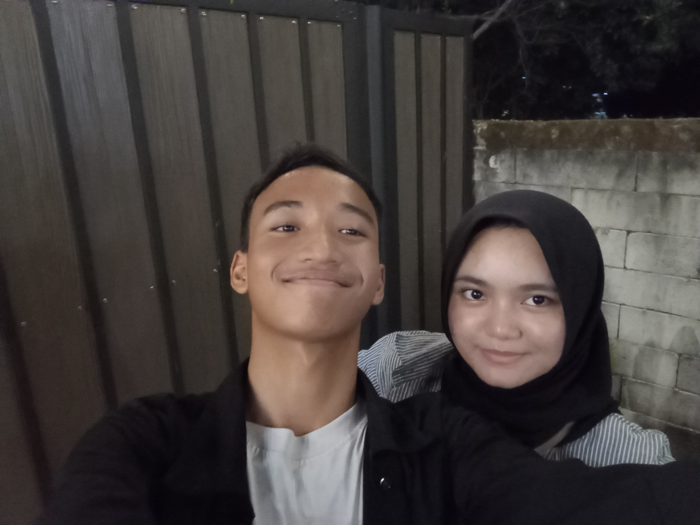